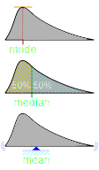
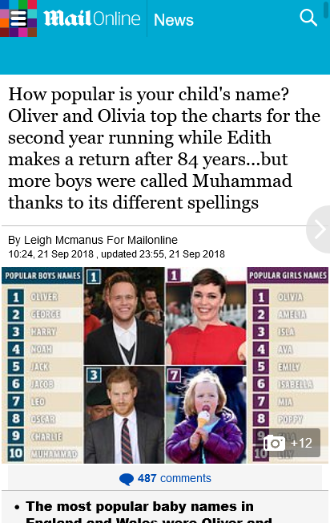
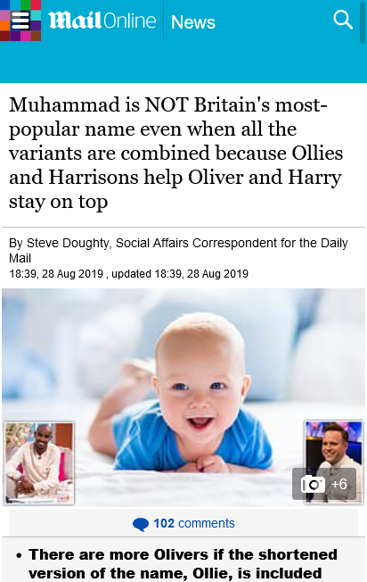
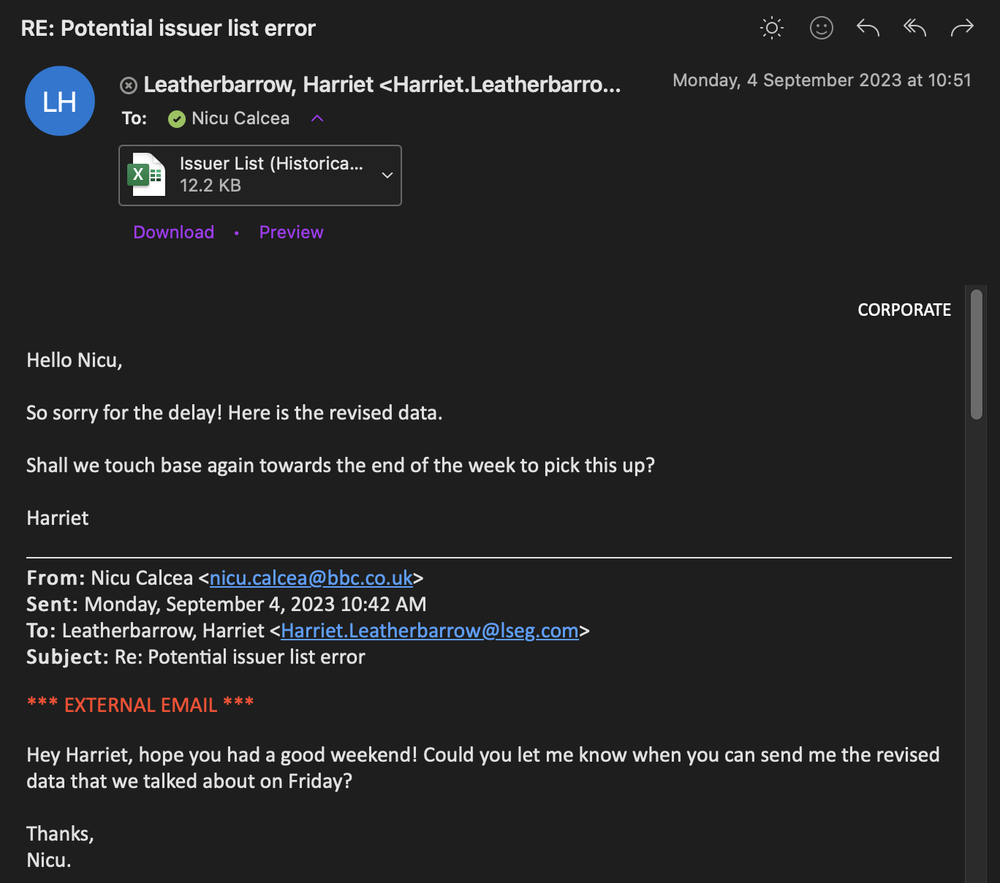
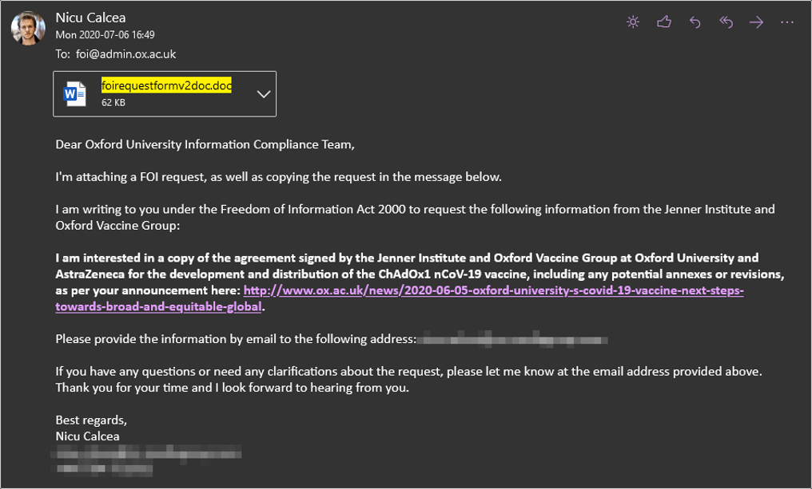
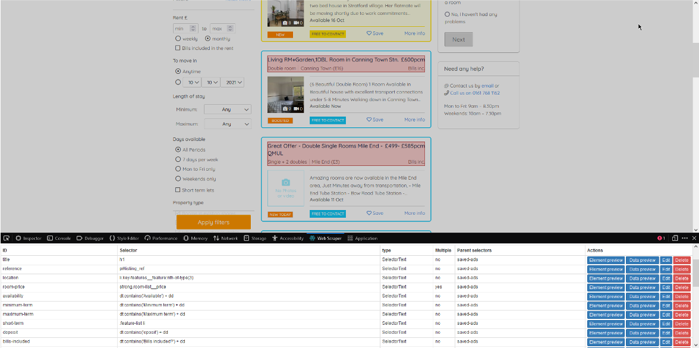
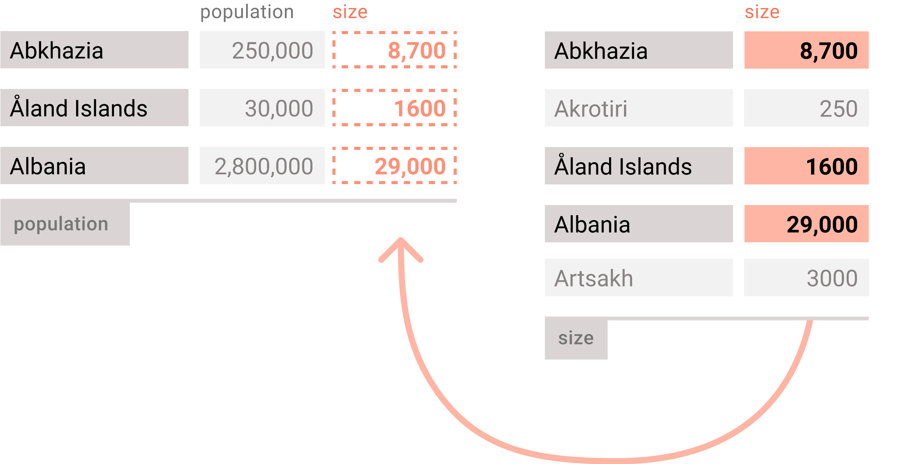
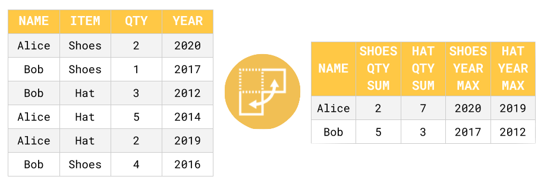
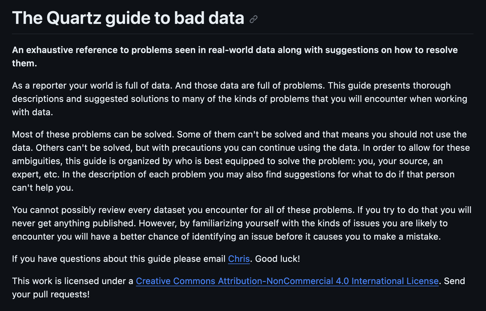
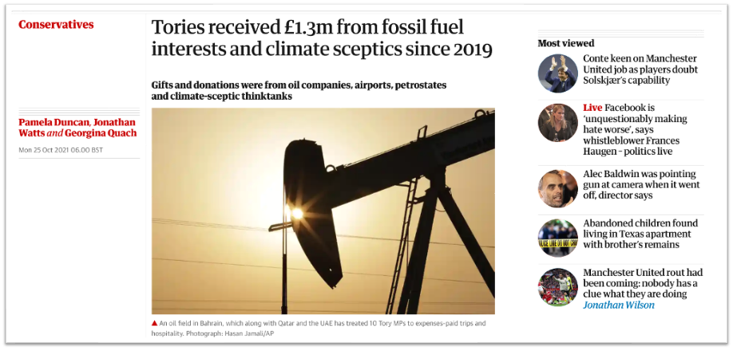

Intro to Data Journalism
City, University of London
https://ddj.nicu.md/city/
👋 Welcome to Data Journalism
Who am I?
My name is Nicu Calcea.
I’m a data investigative journalist and City University alumnus.
I work at Global Witness, and I was previously doing data journalism at BBC News and the New Statesman.
Some stories
- The UK government met with oil lobbyists every day last year
- Eight out of ten firms pay men more than women
- How much territory does Ukraine control? Use this interactive map to find out
- Tory MPs would be over £1m worse off in six months with Boris Johnson’s second job ban
My personal website: nicu.md
Get in touch
Who are you?
- What’s your name?
- What course are you in?
- Do you have any experience in data journalism?
- Why did you choose this module?
The plan
- Week 1: Introduction
- Weeks 2-3: Analysis
- Week 4: Cleaning
- Week 5: Stories
- Week 6: Visualisation
- Week 7: Maps
- Week 8: Projects
- Week 9: Scraping
- Week 10: Conclusions
Week 1
Introduction to Data Journalism
What is Data Journalism?
In its most simple definition, data journalism is the practice of using numbers and trends to tell a story. — Betsy Ladyzhets
Data journalism [is] finding – in data – stories that are of interest to the public and presenting them in the most appropriate manner for public use and reuse. — Bahareh Heravi
History
Why do we need data journalism?
Tell richer stories
An increasing amount of human activity is recorded with data. This means there is a data angle for almost any subject.
Be more efficient
We tell some stories every year, month or day. We can greatly simplify or automate stories, giving us more time to focus on in-depth reporting.
Be more accurate
Though not without data quality issues and ethical considerations, accuracy is central to data journalism.
Unique angles
There are now stories where a data angle is the only or main angle. By using data, journalists can create news instead of covering them.
Personalise news
Make readers invested in a story by personalising it to their postcode, age or socio-economic status.
New audiences
Data journalism is exciting (I hope). The pandemic has shown that readers will reward publishers with their clicks.
Job trends
Since the pandemic, nearly every newsrooms has prioritised data journalism and has been massively hiring for data journalism positions.
New(-ish) platforms like Datawrapper and Flourish allow journalists to create and visualise data stories easier and without much technical expertise.
However, the increased supply of data journalists from courses like this means there are higher entry requirements (R, Python, SQL).
The process
Question
As with all journalism, data journalism starts with a question that the reporter wants to answer.
Source data
Data can come from government sources, third parties, or be collected by the reporter themselves.
Clean data
In most cases, you will need to filter, sort and clean up any errors or missing information in your dataset.
The process
Analyse data
How do you find the answer to your question in the data?
Review
While data doesn’t lie, data publishers do. Do your findings make sense? Can you verify them?
Present results
Communicate data in the most suitable way. Usually, but not always, you will visualise your findings.
The process

Source: Paul Bradshaw
Source: Paul Bradshaw
Baby names
- Make a copy of this spreadsheet and pick one tab to work in. Data from the ONS.
- The yellow cells indicate where you need to fill in formulas.
- What are some other potential stories that you can think of? Are there more babies named after the royals? What about Game of Thrones characters? What are the most popular gender-neutral names? Long-term trends?
[=A1+A2]
Returns one number added (+) or subtracting (*) another.
[=A1/B$1]
Returns one number divided (/) or multiplied (*) by another.
[=SUM()]
Returns the sum of a series of numbers and/or cells.
=AVERAGE()
Returns the numerical average value in a dataset, ignoring text.
=MEDIAN()
Returns the median value in a numeric dataset.
[=(NEW-OLD)/OLD]
Shows percentage change.
Averages

=MODE()
Finds the most common value in a range.
=MEDIAN()
Finds the value that’s right in the middle of a dataset.
=AVERAGE()
Sum all the values and divide by the number of records.
How did the Mail do it?
2018

2019

Assignments
Critique a data journalism project
- A 20-25 minute long narrated group PowerPoint presentation critiquing a data project that won or was shortlisted for the Sigma Awards.
- 500-word group reflection, with appropriate references.
- A 200-word reflection on your own learning.
Deadline: Friday, 13 December, 16:00 Marking: 40% of your final mark
Data journalism portfolio
- One news story (400 words).
- One EITHER feature story OR news investigation (800 words) substantially based on data techniques; and published digitally with appropriate visualisations.
- A 200 word reflective blog-post style log on you own learning journey.
Deadline: Friday, 24 January, 16:00 Marking: 60% of your final mark
Contact
Week 2
Introduction to Data Journalism
https://ddj.nicu.md/city/
Sourcing data
Open Data
- Other nations
- International
More sources: ddj.nicu.md
Plan ahead
Source: ddj.nicu.md
Closed data
FOIs
Scraping
Census exercise
- Make a copy of this spreadsheet (here’s the original data).
- Before you do anything else, what are some questions you would like to answer?
- Free first row, filter the table to the region you’re from (or London)
- Fill in the columns at the end
- What are some other potential stories that you can think of?
[=A1+A2]
Returns one number added (+) or subtracting (*) another.
[=A1/B$1]
Returns one number divided (/) or multiplied (*) by another.
[=SUM()]
Returns the sum of a series of numbers and/or cells.
=AVERAGE()
Returns the numerical average value in a dataset, ignoring text.
=MEDIAN()
Returns the median value in a numeric dataset.
[=(NEW-OLD)/OLD]
Shows percentage change.
[=IF()]
Returns one value if the result is true, another if it’s false.
[=COUNTIF()]
Count all the cells that match a condition.
[=SUMIF()]
Sum all the cells that match a condition.
[=CONCATENATE()]
Combine multiple bits of text together. Use =SPLIT() for the opposite.
[=VLOOKUP()]
Match the values in a cell with the corresponding row in another dataset.
[=XLOOKUP()]
Same as =XLOOKUP() but more flexible and easier to grasp.
Contact
Week 3
Introduction to Data Journalis
https://ddj.nicu.md/city/
Toolbox
Source: ddj.nicu.md
XLOOKUP
XLOOKUP exercise
- Make a copy of this spreadsheet.
- Fill in the empty columns with formulas we learned last time.
Pivot Tables
Pivot tables are extra tables in your spreadsheet, in which you can summarise data from your original table.
You can calculate averages, counts, max/min values or sums for numbers in a group.
Pivot table exercise
- Make a copy of this spreadsheet.
Bonus points: Grab a CSV from police.uk and do it yourself.
Averages
=MODE()
Finds the most common value in a range.
=MEDIAN()
Finds the value that’s right in the middle of a dataset.
=AVERAGE()
Sum all the values and divide by the number of records.
Contact
Week 4
Introduction to Data Journalis
https://ddj.nicu.md/city/
Make your spreadsheets fact-checkable
It’s all about:
Documentation
- keep the reference to the source data unaltered
- if needed add a data dictionary or write down what you did
- use sensible names for your columns (not “weight”) and sheets (not “Sheet1”)
- one question = one sheet
Reproducibility
- do analysis on a new sheet, never on the original data
- use range or sheet protection
- back up often
Data prep
Source: Datawrapper
Missing data
Sometimes, records disappear or were never collected. It may not always be the obvious when that is the case.
Duplicated data
Records can be repeated, either due to technical mishaps or due to repeated input.
Misspellings
Humans make mistakes. Assume any dataset manually created by humans to have missspelings.
Poor formatting
Some spreadsheets are designed to be read by humans, not computers. We then need to teach software to read it correctly.
Parsing errors
Wrong Excel formula? Üṅṛëċöġṅïṡëḋ characters? Old Excel version? These can all mess with your data.
Inconsistent data
A column can have different unites, spell categories differently or record different methodologies.
The guide to bad data
Source: Quartz
Source: ONS
Baby names exercise
OpenRefine
Source: The Guardian
Download OpenRefine
Source: OpenRefine
Food hygiene data
Source: Food Standards Agency
Food hygiene exercise
- Make a copy of the food hygiene ratings data.
- Answer these questions:
- What kind of establishments are the best rated in Islington?
- What establishment with a rating of 0-1 is due a follow-up visit?
- How many establishments received a 5-star rating this month?
- What is the cleanest hotspots (highest average hygiene with 10+ ratings)?
- Any other interesting angles?
Group assignment
You will be split into teams of (tbd) to create a narrated PowerPoint presentation critiquing a data project featured in the Sigma Awards. You can choose a winner or a short-listed project.
Deadline: Friday, 13 December, 16:00
Deliverables
- A 20-25 minute long narrated PowerPoint presentation.
- A 500-word group reflection, with appropriate references (Harvard and I suggest using Zotero as citation manager).
- Fill in this spreadsheet with your name and the project you’re working on.